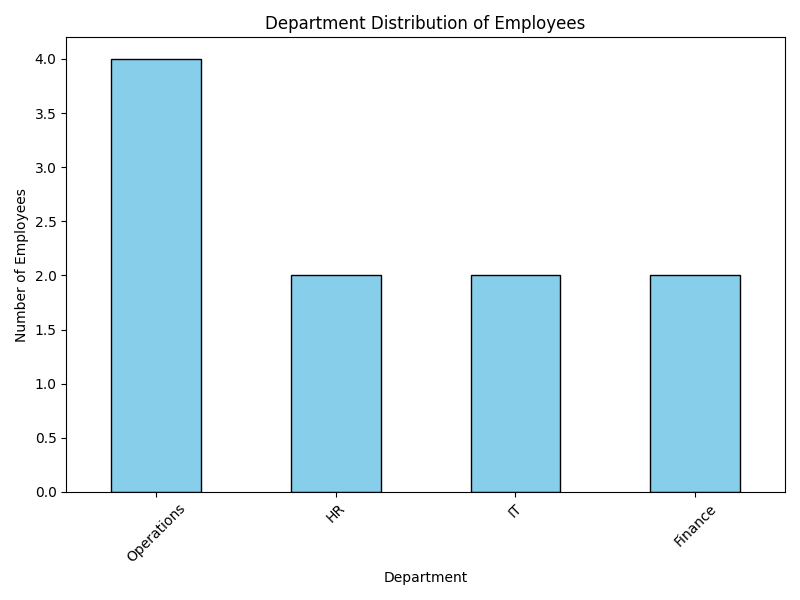

Email for verification: 24f2001915@ds.study.iitm.ac.in
Frequency count for Operations Department: 4

import pandas as pd
import matplotlib.pyplot as plt
data = {
"EmployeeID": [1,2,3,4,5,6,7,8,9,10],
"Name": ["A","B","C","D","E","F","G","H","I","J"],
"Department": [
"Operations","HR","IT","Finance","Operations",
"Operations","HR","IT","Finance","Operations"
],
"Region": ["East","West","North","South","East","West","North","South","East","West"],
"PerformanceScore": [80,72,91,65,87,93,70,88,77,85]
}
df = pd.DataFrame(data)
operations_count = df[df["Department"] == "Operations"].shape[0]
print("Frequency count for Operations Department:", operations_count)
plt.figure(figsize=(8,6))
df["Department"].value_counts().plot(kind="bar", color="skyblue", edgecolor="black")
plt.title("Department Distribution of Employees")
plt.xlabel("Department")
plt.ylabel("Number of Employees")
plt.xticks(rotation=45)
plt.tight_layout()
plt.savefig("department_hist.png")